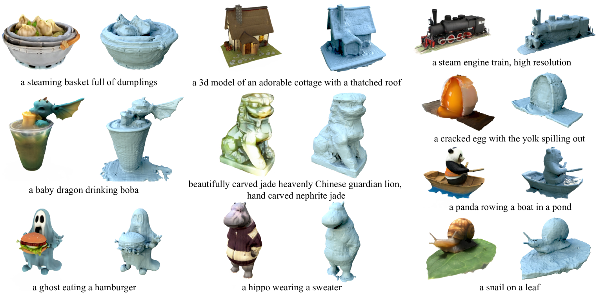
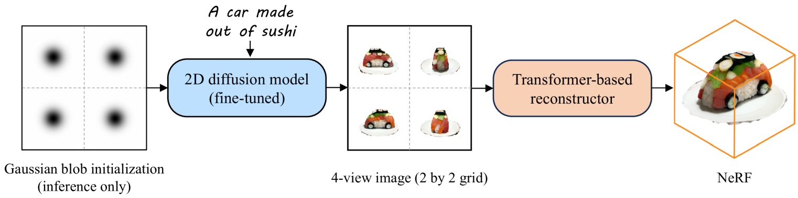
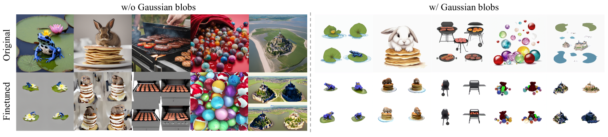
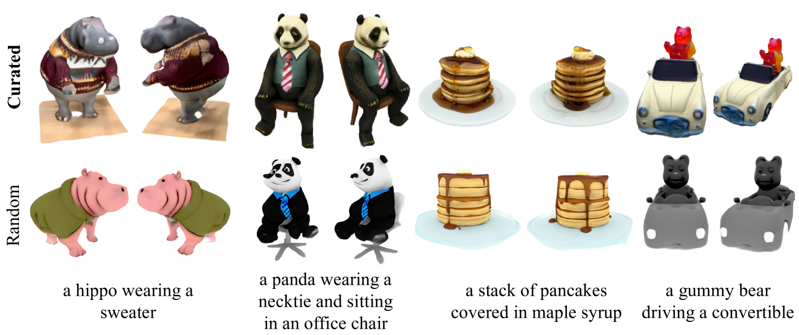

📋 综述概要
前馈 3D 重建是 2023-2026 年的最重要趋势之一。与传统 3DGS 需要每场景优化不同，前馈模型通过大规模训练学会从稀疏视角图像直接预测 3D 表示，推理仅需 0.1-1 秒。本综述覆盖六项核心工作。
1. LRM / Instant3D: 前馈重建的起点 (2023)
LRM (Large Reconstruction Model) 基础
LRM 是前馈 3D 重建的奠基工作，提出用大型 Transformer 从稀疏视角图像直接回归 NeRF 的 triplane 表示。开创了"大模型 + 大数据"的 3D 重建范式。
Instant3D (arXiv: 2311.06214)
方法：两阶段范式：(1) 微调 2D 文生图扩散模型，一次性生成 4 张结构化一致的多视角图像；(2) 用 Transformer 稀疏视角重建器从 4 张图直接回归 NeRF。
结果：20 秒内从文本生成高质量 3D 资产，比优化方法快 100 倍。
DMV3D (arXiv: 2311.09217)
方法：将 Transformer-based 3D LRM 用于多视角扩散去噪，通过 NeRF 重建和渲染实现单阶段 3D 生成。~30 秒在单 A100 GPU 完成生成。
亮点：仅用图像重建损失训练，不需要 3D 资产数据。在单图重建和文生 3D 均达到 SOTA。
2. CRM: 卷积重建模型 (arXiv: 2403.05034)
作者: Wang et al. (清华 / 腾讯) | 发表: 2024-03
问题：基于 Transformer 的 LRM 忽略了 triplane 的几何先验，在 3D 数据有限时训练慢、质量次优。
核心观察：triplane 的可视化与六张正交视图图像有空间对应关系。
方法：(1) 从单张输入图生成六张正交视图图像；(2) 将六张图送入卷积 U-Net，利用像素级对齐能力和高带宽生成高分辨率 triplane；(3) 使用 Flexicubes 作为几何表示，支持端到端网格优化。
结果：10 秒生成高保真纹理网格，无需测试时优化。
3. GRM: 大型高斯重建模型 (arXiv: 2403.14621)
作者: Xu et al. (Stanford / 港中文 / 蚂蚁 / 清华) | 发表: 2024-03
方法：大规模前馈 Transformer 重建器，从稀疏视角图像恢复 3D 资产。高效融合多视角信息，将像素转换为像素对齐的高斯，反投影生成密集 3D 高斯集合。
与 LRM 的区别：用 3D 高斯替代 triplane NeRF 作为输出表示，利用高斯显式表示的可编辑性和效率优势。展示了与多视角扩散模型结合用于文生 3D 和图生 3D。
意义：证明了前馈 Transformer + 高斯表示的组合可行且高效，为后续 GS-LRM 等工作铺路。
4. GS-LRM: 3D 高斯 Splatting 大型重建模型 (arXiv: 2404.19702)
作者: Zhang, Bi, Tan et al. (Adobe Research) | 发表: 2024-04
核心架构：非常简洁的 Transformer 架构——(1) Patchify 输入位姿图像；(2) 多视角图像 tokens 通过 Transformer blocks 交互；(3) 直接从 tokens 解码每像素高斯参数用于可微渲染。
5. Long-LRM / Long-LRM++: 长序列大规模重建 (arXiv: 2410.12781 / 2512.10267)
作者: Chen Ziwen, Tan, Zhang, Bi et al. (Adobe / Oregon State) | 发表: 2024-10 (v1), 2025-12 (Long-LRM++), CVPRF 2026
Long-LRM：前馈 3D 高斯重建模型，输入 32 张 960×540 分辨率图像，1 秒内在单 A100 上完成 360° 场景级重建。处理 250K tokens 的长序列——混合 Mamba2 blocks 和 Transformer blocks，轻量 token merging 和高斯剪枝。
结果：在 DL3DV 基准上质量接近优化方法，速度提升 800×，输入规模比之前前馈方法大 60×。
Long-LRM++ (CVPRF 2026)：采用半显式场景表示 + 轻量解码器，在 DL3DV 上匹配 LaCT 渲染质量，同时实现 14 FPS 实时渲染。可扩展到 64 张输入视图。在 ScanNetv2 上深度预测优于直接从高斯渲染。
📊 横向对比
| 模型 | arXiv | 输出表示 | 输入数量 | 推理速度 | 场景/物体 | 关键创新 |
|---|---|---|---|---|---|---|
| LRM | 2308 | Triplane NeRF | 1-4 | ~秒级 | 物体 | 奠基工作 |
| Instant3D | 2311.06214 | Triplane NeRF | 4 (生成) | ~20s | 物体 | 多视角扩散 + 重建 |
| DMV3D | 2311.09217 | Triplane NeRF | 多视角 | ~30s | 物体 | 扩散 + LRM 统一 |
| CRM | 2403.05034 | Flexicubes Mesh | 1 | ~10s | 物体 | 卷积 + 正交视图 |
| GRM | 2403.14621 | 3D Gaussians | 稀疏 | ~0.1s | 物体 | 像素对齐高斯 |
| GS-LRM | 2404.19702 | 3D Gaussians | 2-4 | 0.23s | 物体+场景 | 每像素高斯, 可扩展 |
| Long-LRM | 2410.12781 | 3D Gaussians | 32 | ~1s | 场景 360° | Mamba2+Transformer |
| Long-LRM++ | 2512.10267 | 半显式表示 | 32-64 | 14 FPS | 场景 360° | 轻量解码器, 实时 |
| VGGT | 2503.11651 | Point Map | 1-数百 | <1s | 物体+场景 | 多任务统一 |
💡 个人分析
- 表示形式的演进：Triplane NeRF (LRM) → 3D Gaussians (GRM/GS-LRM) → 半显式表示 (Long-LRM++) → 点图 (VGGT)。高斯表示因显式性和可编辑性成为主流，但半显式方法试图兼顾质量和速度。
- 场景级重建的突破：从只能重建物体（LRM）到 360° 场景重建（Long-LRM），输入从 2-4 张扩展到 32-64 张。这是 2024-2025 年最关键的进步。
- 架构选择：纯 Transformer (GS-LRM) 在小输入时高效，Mamba2+Transformer 混合 (Long-LRM) 在长序列时更有优势。注意力机制的 O(n²) 复杂度是扩展瓶颈。
- 速度 vs 质量的权衡：前馈方法已实现比优化方法快 100-800× 的速度，但质量仍有差距。Long-LRM++ 的半显式方法试图在保持实时渲染的同时缩小质量差距。
- 与 3D 生成的结合：Instant3D 和 GRM 都展示了与多视角扩散模型结合用于文生 3D 的潜力。前馈重建模型是 3D 生成 pipeline 的关键组件。
- Adobe Research 的领导角色：GS-LRM 和 Long-LRM 系列均来自 Adobe Research，Adobe 在前馈 3D 重建方向投入持续且系统化。
- 未来方向：(1) 更大规模训练数据和模型; (2) 更高分辨率输入; (3) 与扩散模型更紧密结合; (4) 实时渲染 (Long-LRM++ 14 FPS 是起点); (5) 与 VGGT 等几何基础模型融合。
🖼️ arXiv HTML 论文原图 (Instant3D)
以下图片从 arXiv HTML 版本直接提取，展示 Instant3D (arXiv: 2311.06214) 原始架构图和结果对比。
Figure 1: Instant3D 文本到 3D NeRF 生成示例

Figure 1: 从文本提示在 20 秒内生成高质量 3D NeRF 资产。展示新视角渲染和从密度场提取的网格。
Figure 2: Instant3D 方法概览 — 两阶段管线

Figure 2: 给定文本提示，(1) 微调 2D 扩散模型一次性生成 4 视角图像（2×2 网格），使用高斯斑块作为初始化；(2) Transformer 稀疏视角重建器从 4 视角图像生成最终 NeRF。
Figure 3: 稀疏视角重建器架构

Figure 3: 模型使用预训练 ViT 编码多视角图像为位姿感知 token，通过 Transformer 解码器生成场景的三平面表示，最后通过体积渲染生成新视角。
Figure 4: 文本到 3D 定性对比

Figure 4: 文本到 3D 的定性对比，与之前方法的比较。
Figure 5: 高斯斑块初始化消融

Figure 5: 使用和不使用高斯斑块初始化生成的结果对比。
Figure 6: 多样性生成结果

Figure 6: 同一文本提示生成多样化结果。
📐 算法框图 / 💡 创新 / 🎯 应用 / 🏋️ 训练 / 📊 数据 / 📐 损失 / 🔄 演进
LRM 架构
- 输入：单张图像
- 编码：ViT 提取图像 patch 特征
- 生成：Transformer decoder → NeRF/Triplane
- 输出：Triplane NeRF 表示
- 问题：需要 per-object 优化
GS-LRM 架构
- 输入：多视角图像
- 编码：DINOv2 提取多视角特征
- 生成：多头 Transformer → 直接预测高斯参数
- 输出：3D 高斯，无需优化
核心创新
- LRM：首次证明单图前馈 3D 重建可行
- GS-LRM：多视角前馈 → 直接预测高斯，无需优化
- Long-LRM：扩展输入视角数量
- Instant3R：DINOv2 + 交叉注意力，点云输出
损失函数
- 渲染损失：L_render = L1 + LPIPS（多视角渲染一致性）
- 参数损失：L_param = ||θ_pred - θ_gt||²（高斯参数回归）
- 感知损失：在 ImageNet 预训练特征空间计算